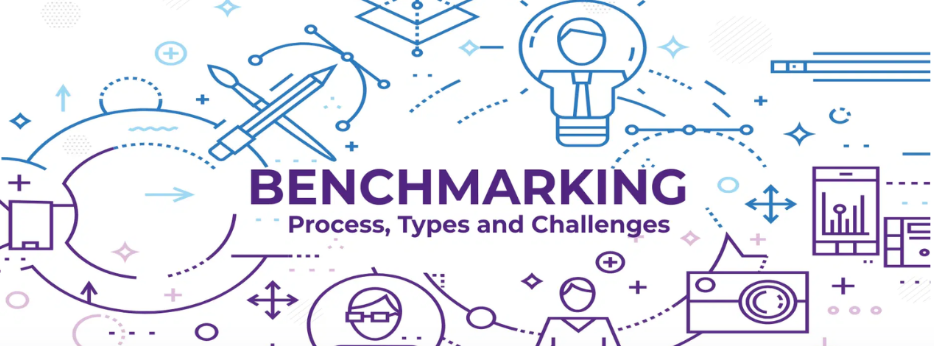
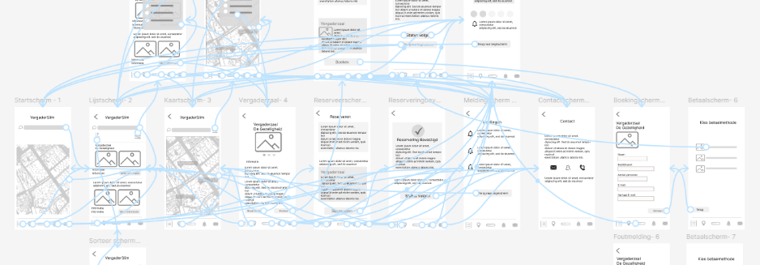
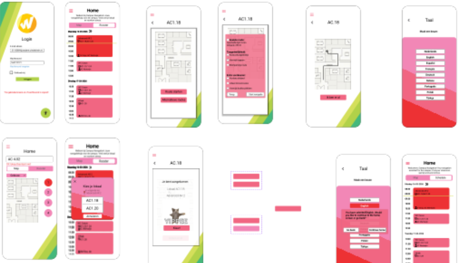

Mijn werk
Projecten
Hieronder vind je een selectie van projecten waarin ik heb gewerkt aan UX-onderzoek, wireframes, prototypes en digitale oplossingen.

Escape Room
Een interactieve game in Roblox waarin spelers puzzels oplossen om te ontsnappen.
Game Design
Benchmarkanalyse
Onderzoek naar bestaande platforms voor het reserveren van vergaderruimtes.
UX Research
Designbrief
Het vastleggen van doelgroep, probleemstelling, doelen en ontwerprichting.
Strategy
Low-fidelity
De eerste wireframes waarin structuur, indeling en gebruikersflows zijn uitgewerkt.
Wireframing
High-fidelity
De visuele uitwerking van het eindprototype met kleuren, typografie en interactie.
UI Design
VergaderSlim
Een mobiele app voor realtime en transparant vergaderruimtes reserveren.
UX / UI Design
ZIVRA
Een UX-concept voor het begrijpelijk maken van revalidatiedata.
Healthcare UX